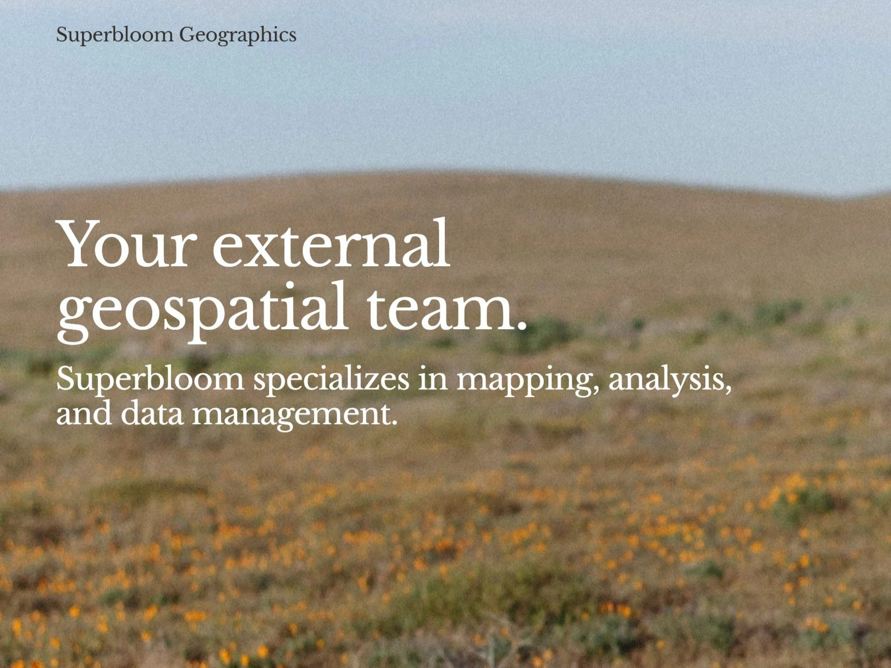

Superbloom Geographics
Through Superbloom Geographics I provide site mapping, geospatial analysis, and data management services to organizations working to improve our environment and communities.

Through Superbloom Geographics I provide site mapping, geospatial analysis, and data management services to organizations working to improve our environment and communities.